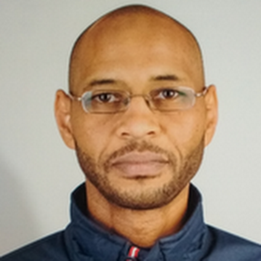

Postdoctoral researcher at INESC-ID, University of Lisbon, working across digital twins for healthcare, gait analysis, remote patient monitoring, and trustworthy distributed systems. His research connects sensing, personalized modeling, uncertainty-aware updating, IoT security, and blockchain-based data systems.
My work lies at the intersection of computer science, data-driven modeling, and healthcare technologies. I am interested in building practical and trustworthy digital twins that support monitoring, personalization, and clinical decision-making.
Current keywords: digital twins, gait analysis, remote patient monitoring, wearable sensing, indoor positioning, distributed systems, blockchain, personalized modeling, and uncertainty quantification.
Developing digital twin concepts for gait and mobility monitoring in healthcare settings.
Research contributions in blockchain-based dependable systems and secure data exchange.
IoT device location certification, indoor positioning, and Ambient Assisted Living.
I received my Ph.D. in Computer Science from the Universities of Minho, Aveiro, and Porto in 2018, with work on behavioral modeling for Ambient Assisted Living. Earlier, I completed an M.Sc. in Computer Science at the University of Malaya and a B.Sc. in Computer Science at Sudan University. My research career has developed through positions at INESC-ID, Centro de Computação Gráfica, Centro Algoritmi, and academic institutions in Portugal, Malaysia, and Sudan.
My long-term research goal is to develop continuously updating digital twins for healthcare that can integrate real-world data, personalized models, and uncertainty-aware reasoning to support clinical decision-making. I am particularly interested in digital twins for gait and mobility, where wearable sensing, longitudinal monitoring, and adaptive model updating can help distinguish short-term fluctuations from clinically meaningful decline. This vision brings together distributed systems, data integration, synchronization policies, and validation methodologies to create trustworthy patient-centric twin systems that are both scientifically rigorous and clinically useful.
Exploring a digital twin approach for gait and mobility monitoring in people with chronic neurological conditions, with emphasis on adaptive updating, longitudinal personalization, and clinically meaningful mobility outcomes.
Investigating how periodic, event-driven, and hybrid synchronization policies affect timeliness, consistency, uncertainty, and the practical behavior of patient-centric digital twins.
Studying dependable data pipelines that combine sensing, blockchain-based traceability, and validation mechanisms for healthcare and other safety-critical digital systems.
Researcher at INESC-ID within the national agenda Descentralizar Portugal com Blockchain,
contributing to research tasks, technological development, deliverables, and student co-supervision.
Researcher and co-project manager focused on creating and validating location certificates for IoT devices. Contributed to the framework design, data models, libraries, abstractions, project deliverables, and publications.
Contributed to projects including Intelligent4DMoulds, UH4SP, SAMU, MOSAIC 2B, AAL4ALL, TriallMed, and smart home systems, covering computer vision, Industry 4.0, autonomous systems, e-health, and Ambient Assisted Living.
E. Nunes, Samih Eisa, M. L. Pardal, and M. Calha. IEEE NCA, 2025.
F. Faria, Samih Eisa, D. R. Matos, and M. L. Pardal. IEEE NCA, 2025.
A. Avelar, Samih Eisa, O. Remédios, and M. L. Pardal. EDCC Companion, 2025.
Lucas H. Vicente, Samih Eisa, and Miguel L. Pardal. IEEE NCA, 2022.
Samih Eisa and Adriano J. C. Moreira. Sensors, 2017.
More publications are available on Google Scholar.
My work has contributed to software frameworks, data models, and experimental prototypes across IoT security, blockchain systems, indoor positioning, Ambient Assisted Living, and healthcare-oriented digital twin concepts.
These include location-certification frameworks, blockchain-based dependable data exchange mechanisms, analytical tools, and applied R&D software developed in collaboration with academic and industrial partners.
I am interested in strengthening the reproducibility and reusability of my work through better curation of software artifacts, datasets, and methodological notes, especially for digital twins and remote monitoring research.
My research has been developed through collaboration with multidisciplinary teams across academia and industry, including INESC-ID, Centro de Computação Gráfica, Centro Algoritmi, Bosch-linked projects, and international academic environments in Portugal, Malaysia, and Sudan. I am especially interested in collaborations that connect systems research with healthcare applications, wearable sensing, and clinically grounded digital twin development.
The central motivation of my research is to develop digital and data-driven systems that are useful beyond the laboratory. My work has addressed healthcare monitoring, Ambient Assisted Living, indoor positioning, IoT trust, and blockchain-based dependable data systems. Looking forward, I aim to contribute to patient-centered digital twins that support remote assessment, rehabilitation, and more timely interventions in real-world healthcare settings.
A narrative CV version highlighting my contributions to knowledge generation, team development, community service, and broader societal impact is available upon request and will be linked here in a future update.
Email: samih.eisa@inesc-id.pt
Affiliation: INESC-ID, Instituto Superior Técnico, University of Lisbon
Location: Lisbon, Portugal